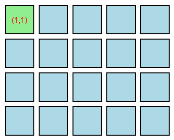

Algoritmos
Apresentação de slides do tema
O que é um Algoritmo?
Um algoritmo é um conjunto de instruções organizadas de maneira lógica e finita, criado para resolver um problema ou executar uma tarefa específica. Em termos simples, pode-se compará-lo a uma receita de cozinha: ele indica passo a passo o que deve ser feito, em que ordem e com quais dados, garantindo que qualquer pessoa ou sistema que siga essas instruções possa chegar ao resultado esperado. Cada passo tem um propósito claro, e a sequência completa define o caminho do início até a conclusão da tarefa.
Na matemática, na ciência da computação e em diversas áreas da engenharia, os algoritmos são essenciais porque permitem que problemas sejam resolvidos de forma estruturada, eficiente e sem ambiguidades. Eles são capazes de lidar com situações simples, como somar dois números, até processos extremamente complexos, como organizar rotas de transporte, processar grandes volumes de dados, treinar modelos de inteligência artificial ou simular fenômenos naturais de alta complexidade.
Além de simplesmente seguir uma sequência de passos, um algoritmo geralmente trabalha com entradas e saídas. As entradas correspondem aos dados ou informações que o algoritmo recebe para processar, enquanto as saídas representam os resultados ou respostas produzidos ao final do processamento. Isso significa que, para funcionar corretamente, um algoritmo depende de informações de entrada confiáveis e gera resultados que podem ser utilizados por pessoas, outros sistemas ou processos automatizados. Em muitas situações, a mesma lógica pode produzir diferentes saídas dependendo dos dados fornecidos, demonstrando a flexibilidade e a importância do conceito de entradas e saídas no design de algoritmos.
Dessa forma, entender como projetar algoritmos claros, organizados e capazes de lidar adequadamente com entradas e saídas é fundamental para qualquer pessoa que trabalhe com resolução de problemas, programação ou análise de processos complexos, tornando o pensamento lógico uma habilidade central no desenvolvimento de soluções eficientes e confiáveis.
Principais características de um algoritmo
Um algoritmo precisa obedecer a algumas regras essenciais para ser considerado válido:
Finitude: o algoritmo deve terminar em algum momento. Isso significa que ele não pode entrar em um ciclo infinito de instruções — deve sempre chegar a um resultado ou a uma conclusão.
Precisão: cada etapa do algoritmo deve ser clara e bem definida. Não pode haver dúvidas sobre o que fazer em cada passo.
Efetividade: as instruções devem ser simples e executáveis. Cada ação deve ser possível de ser realizada dentro de um tempo finito, usando os recursos disponíveis (computador, pessoa, máquina, etc.).
Essas três propriedades garantem que o algoritmo seja entendível, funcional e confiável.
Exemplo de algoritmo
Um exemplo clássico para entender o conceito é uma receita de bolo. Pense: para assar um bolo, você segue um conjunto de instruções como:
Misture os ingredientes secos.
Adicione os ovos e o leite.
Bata até formar uma massa homogênea.
Coloque em uma forma untada.
Leve ao forno por 40 minutos.
Cada um desses passos é bem definido e precisa ser executado em ordem. Se você mudar a sequência ou omitir um passo, o resultado provavelmente será diferente do esperado. O mesmo acontece com os algoritmos — eles precisam de passos bem organizados e corretos para chegar ao resultado desejado.
Eficiência e complexidade
Nem todos os algoritmos que resolvem o mesmo problema são igualmente bons. Dois algoritmos diferentes podem chegar à mesma resposta, mas um deles pode ser muito mais rápido ou usar menos memória do que o outro. Essa diferença é o que chamamos de eficiência.
A eficiência de um algoritmo é estudada através da complexidade computacional, que mede o tempo e os recursos necessários para executá-lo. Por exemplo, há algoritmos de busca que examinam cada item de uma lista um por um, e outros que encontram o resultado em frações de tempo usando estruturas de dados mais adequadas.
Algoritmos condicionais
Nem todos os algoritmos seguem uma sequência de passos fixa. Em muitas situações, é necessário tomar decisões durante a execução de um processo. Para isso, utilizam-se as estruturas condicionais, que permitem ao algoritmo escolher caminhos diferentes dependendo das condições apresentadas.
Em termos simples, uma condicional é uma instrução que faz o algoritmo verificar uma situação — por exemplo, comparar valores, verificar um estado ou analisar uma escolha — e, com base nesse resultado, decidir o que fazer em seguida.
Essas decisões tornam os algoritmos muito mais inteligentes e flexíveis, pois permitem que eles se adaptem a diferentes contextos ou dados de entrada.
O que é uma condição?
Uma condição é uma expressão lógica que pode resultar apenas em dois valores possíveis: verdadeiro (True) ou falso (False). O algoritmo avalia essa condição e, dependendo do resultado, executa um determinado conjunto de instruções.
Por exemplo:
“Se a temperatura for maior que 30 graus, ligar o ventilador.”
“Se o usuário digitar a senha correta, permitir o acesso.”
“Se o saldo for menor que zero, mostrar mensagem de saldo insuficiente.”
Essas decisões baseiam-se sempre em testes lógicos — comparações e verificações que determinam qual caminho o algoritmo seguirá.
Estrutura básica de uma decisão
A estrutura lógica de um algoritmo condicional pode ser descrita da seguinte forma:
Se (condição for verdadeira):
execute a ação A
Senão:
execute a ação BEm outras palavras:
Se algo for verdade, faça isso; caso contrário, faça aquilo.
Esse tipo de estrutura é fundamental para qualquer programa, pois quase todas as aplicações precisam lidar com situações alternativas ou respostas diferentes de acordo com os dados fornecidos.
Encadeamento de condições
Algumas vezes, é necessário verificar mais de uma possibilidade. Nesses casos, o algoritmo pode encadear várias condições, avaliando uma de cada vez até encontrar a que corresponde à situação atual.
Por exemplo, em um algoritmo que determina o desempenho de um aluno:
Leia a nota final.
Se a nota for maior ou igual a 9, exiba “Excelente.”
Senão, se a nota for maior ou igual a 7, exiba “Bom.”
Senão, se a nota for maior ou igual a 5, exiba “Regular.”
Caso contrário, exiba “Reprovado.”
Esse tipo de encadeamento permite que o algoritmo classifique diferentes situações e produza resultados variados com base nas condições fornecidas.
Importância dos operadores lógicos e de comparação
Para formular condições, os algoritmos utilizam operadores de comparação, como:
“==” (igual a)
“!=” (diferente de)
“>” (maior que)
“<” (menor que)
“>=” (maior ou igual a)
“<=” (menor ou igual a)
Além disso, também podem ser usados operadores lógicos, que combinam várias condições:
and (e lógico) — todas as condições precisam ser verdadeiras.
or (ou lógico) — basta que uma condição seja verdadeira.
not (não lógico) — inverte o valor lógico de uma condição.
Esses operadores permitem criar decisões complexas e precisas, aumentando a capacidade do algoritmo de reagir a diferentes situações.
Algoritmos com estruturas de repetição simples
O que é uma estutura de repetição?
Uma estrutura de repetição é um mecanismo que permite executar um conjunto de instruções diversas vezes de forma controlada. Cada repetição é chamada de iteração, e o processo continua até que uma condição específica indique que a repetição deve parar.
Em termos conceituais, podemos imaginar uma estrutura de repetição como um ciclo que se mantém ativo enquanto algo for verdadeiro ou enquanto houver trabalho a ser feito. Esse ciclo garante que o algoritmo repita ações de forma organizada e previsível, economizando esforço e evitando redundâncias. Ao invés de escrever várias vezes a mesma instrução, podemos usar a repetição para executar a mesma ação diversas vezes de forma automática, clara e eficiente.
É importante entender que, mesmo sendo uma estrutura específica, a repetição é um tipo de algoritmo. Isso significa que ela possui as mesmas características essenciais de um algoritmo: passos bem definidos, execução ordenada, capacidade de processar dados e de chegar a um resultado, e uma condição de término. A diferença é que, enquanto um algoritmo tradicional descreve uma sequência linear de ações, a estrutura de repetição permite que certas instruções sejam executadas múltiplas vezes de maneira controlada, dependendo de uma condição ou de um número determinado de repetições.
Além disso, uma estrutura de repetição não existe isoladamente: ela é frequentemente uma parte de outros algoritmos maiores. Em muitos casos, um algoritmo complexo é formado por diversas estruturas de repetição combinadas com decisões condicionais e operações sequenciais. Por exemplo, um algoritmo de processamento de dados pode conter uma repetição para ler cada registro de uma lista e, dentro dessa repetição, uma segunda repetição para analisar os elementos de cada registro individualmente. Dessa forma, cada repetição funciona como um bloco de construção dentro de um algoritmo maior, contribuindo para a execução do processo completo.
Essa característica torna as estruturas de repetição extremamente poderosas e flexíveis: elas permitem que algoritmos se adaptem a diferentes quantidades de dados, respondam a condições variáveis e evitem a repetição manual de instruções, mantendo o código organizado e eficiente. Podemos pensar nelas como “pequenos algoritmos dentro de um grande algoritmo”, que funcionam de forma autônoma, mas sempre integrados ao processo maior, colaborando para que o objetivo final seja alcançado.
Em resumo, uma estrutura de repetição é ao mesmo tempo um algoritmo completo, com começo, meio e fim, e uma parte de outros algoritmos, ajudando a organizar e automatizar tarefas repetitivas de forma controlada e eficiente. Compreender esse conceito é fundamental para entender como os algoritmos modernos funcionam e como processos complexos podem ser resolvidos de forma estruturada e lógica.
Para que servem as esturturas de repetição?
As estruturas de repetição são essenciais para:
Automatizar tarefas repetitivas: quando a mesma ação precisa ser executada várias vezes, como verificar todos os itens de uma lista, calcular totais ou processar registros.
Controlar processos até que um objetivo seja alcançado: por exemplo, repetir um passo até que uma solução seja encontrada ou um resultado esperado seja atingido.
Reduzir a redundância: evita escrever múltiplas vezes o mesmo conjunto de instruções, tornando o algoritmo mais compacto, legível e fácil de manter.
Permitir interação dinâmica: em situações onde o número de repetições depende de dados fornecidos durante a execução do algoritmo ou de condições externas que mudam com o tempo.
Garantir eficiência: com a repetição, o algoritmo consegue processar grandes volumes de dados sem precisar duplicar instruções, aumentando sua escalabilidade.
Funcionamento de estruturas de repetição
O funcionamento básico de uma repetição pode ser descrito em três etapas conceituais:
Verificação de condição: antes ou depois de cada ciclo, o algoritmo verifica se a condição para continuar a repetição ainda é verdadeira (tornando a esturtura de repetição uma espécie de algoritmo condicional).
Execução do bloco de instruções: enquanto a condição for verdadeira, o algoritmo realiza todas as ações previstas no ciclo. Cada execução é chamada de iteração.
Encerramento da repetição: quando a condição se torna falsa, o ciclo termina e o algoritmo segue para as instruções seguintes.
Dessa forma, a repetição garante que o algoritmo repita apenas o necessário e pare no momento certo, evitando loops infinitos e garantindo eficiência.
Tipos de repetição
Existem diferentes formas de estruturar a repetição em algoritmos, dependendo da necessidade do problema que se deseja resolver. Cada tipo de repetição é mais adequado a uma situação específica e tem suas próprias características de funcionamento. Vamos detalhar as duas estruturas que são mais utilizadas na prática.
Repetição controlada por condição
Em estruturas de repetição controladas por uma condição, o ciclo continua enquanto uma condição lógica permanecer verdadeira Normalmente esta ideia corresponde ao que na programação é chamado de loop do tipo “while” ou repetição condicional. Para realização desta estrutura, um algoritmo verifica uma condição antes ou durante cada iteração. Enquanto essa condição for verdadeira, o bloco de instruções será repetido. Assim que a condição deixa de ser verdadeira, a repetição é interrompida.
Quando usar: este tipo de repetição é ideal quando não se sabe exatamente quantas vezes será necessário repetir, mas existe uma regra clara que determina a continuidade (ou determina o caso de parada).
Exemplos de uso real:
Aguardar até que um sensor indique que uma tarefa foi concluída.
Processar dados de um fluxo até que não haja mais informações disponíveis.
Continuar realizando verificações em um sistema até que uma condição de segurança seja satisfeita.
Pense nessa repetição como uma situação do dia a dia em que você continua fazendo algo “enquanto for necessário”. Por exemplo: “continue estudando enquanto não entender o conceito completamente”.
Repetição controlada por contagem
Em estruturas de repetição controladas por contagem, o ciclo é repetido um número pré-determinado de vezes. Este tipo de repetição corresponde ao que na programação é normalmente chamado de loop do tipo “for” ou repetição por contagem. Para o funcionamento desta estrutura, o algoritmo define antecipadamente quantas vezes o bloco de instruções deve ser executado. Cada repetição é contada até que o número estipulado seja atingido, momento em que a repetição termina automaticamente.
Quando usar: este tipo de repetição é útil quando o número de repetições é conhecido de antemão e não depende de condições externas.
Exemplos de uso real:
Calcular a média de cinco notas (ou a média de n notas, pois quando o código for rodado, o número n será conhecido).
Percorrer todos os itens de uma lista de registros conhecida.
Repetir um teste ou procedimento um número fixo de vezes.
imagine como um cronômetro que conta até um número definido: você sabe exatamente quantas vezes precisa repetir a ação, e o ciclo termina assim que esse número é alcançado.
Exemplo visual
Abaixo está um gif de como um índice percorre uma lista utilizando uma estrutura de repetição controlada por contagem. Neste caso, estamos percorrendo uma lista com 10 elementos, um por um, ou seja, utilizamos uma estrutura de repetição controlada por contagem, onde o número de repetições é 10.
Clique para ver a animação

Geralmente na programação, os índices de acesso à listas não iniciam em 1, mas sim em 0. Isto será abordado postriormente, mas é importante destacar que o que está sendo mostrado neste gif não é usual.
Algoritmos com estruturas de repetição encadeadas
Nem sempre uma única estrutura de repetição é suficiente para resolver um problema. Em muitos algoritmos, é necessário repetir um conjunto de ações dentro de outro ciclo de repetições, criando o que chamamos de estruturas de repetição alinhadas (ou repetições encadeadas, também conhecidas como loops aninhados).
Essas estruturas permitem que um algoritmo execute várias camadas de repetições, controlando diferentes níveis de iteração. Em outras palavras, uma repetição é executada inteiramente a cada vez que a repetição externa realiza uma iteração. Isso cria um comportamento em que o algoritmo percorre combinações de valores ou estruturas mais complexas, como matrizes, listas duplas e conjuntos de dados multidimensionais.
Como funcionam as estruturas de repetição alinhadas
O princípio básico é simples:
O algoritmo inicia o primeiro ciclo (o externo).
Dentro dele, inicia outro ciclo (o interno) que realiza suas repetições completas.
Quando o ciclo interno termina, o controle retorna ao ciclo externo, que avança para a próxima iteração.
Esse processo se repete até que ambas as condições de parada — a do ciclo interno e a do ciclo externo — sejam satisfeitas.
Assim, as repetições funcionam como “camadas” organizadas, em que cada nível depende do anterior. O número total de repetições realizadas é o produto das iterações de cada estrutura envolvida. Por exemplo, se a repetição externa ocorre 3 vezes e a interna 2 vezes, o algoritmo executará o bloco interno 6 vezes ao todo.
Quando utilizar repetições alinhadas
Esse tipo de estrutura é usado quando o problema envolve duas ou mais dimensões de repetição, como:
Percorrer uma tabela (linhas e colunas).
Comparar todos os elementos de uma lista com todos os elementos de outra lista.
Executar um conjunto de testes para cada variável de entrada.
Criar combinações possíveis entre dois ou mais conjuntos de dados.
Em resumo, as repetições alinhadas são indispensáveis quando o algoritmo precisa lidar com relações entre conjuntos de informações ou operações cruzadas entre dados.
Exemplo visual
Abaixo está um gif de como um índice percorre duas listas, utilizando um sistema de encadeamento de estruturas de repetição. Para percorrer esta “tabela” com 5 linhas e 4 colunas, percorremos linha a linha, ou seja, um índice externo está fixo enquanto o outro é percorrido completamente até que o índice externo é incrementado.
Clique para ver a animação
Geralmente na programação, os índices de acesso à listas não iniciam em 1, mas sim em 0. Isto será abordado postriormente, mas é importante destacar que o que está sendo mostrado neste gif não é usual.
Algoritmos na computação
Nos computadores, os algoritmos são a base de todos os programas e sistemas. Quando você abre um aplicativo, faz uma busca na internet, assiste a um vídeo ou joga um jogo, há algoritmos trabalhando em segundo plano — organizando dados, processando informações e tomando decisões automaticamente.
Por exemplo:
Um algoritmo de busca no Google analisa milhões de páginas e encontra a mais relevante para sua pesquisa.
Um algoritmo de redes sociais decide quais postagens aparecem primeiro no seu feed.
Um algoritmo de GPS calcula a rota mais rápida para o seu destino.
Esses algoritmos seguem regras precisas, usam dados de entrada (como o texto digitado ou sua localização) e produzem saídas (como resultados, imagens, recomendações ou trajetos).
Exercícios
Exercício 1
Explique com suas próprias palavras o que é um algoritmo. Dê um exemplo do seu cotidiano que não envolva computadores.
Um algoritmo é um conjunto de instruções organizadas em uma sequência lógica e finita, criado para resolver um problema ou executar uma tarefa específica.
Exercício 2
Dê um exemplo de algoritmo que não tenha relação com programação
Receitas da culinária.
Seguir uma rotina planejada
Higiene do sono.
Exercício 3
Cite as três características principais de um algoritmo e explique por que cada uma delas é importante.
Finitude, importante para que o algoritmo termine em algum momento do tempo.
Precisão, importante para que as etapas não possuam um duplo sentido.
Efetividade, importante para que um algoritmo não seja custoso demais (em termos de memória, tempo e/ou processamento, pois todo são recursos finitos).
Exercício 4
Descreva, como passos enumerados, um algorítmo que seja capaz de categorizar um número como negativo ou positivo
Existem duas maneiras principais de implementar este algoritmo, variando com a escolha de condicional a se utilizar: checar se o número é maior ou igual a 0 ou checar se o número é menor ou igual a 0.
Iníciar o algoritmo.
Ler o número.
Perguntar se o número é maior ou igual a 0 (número >= 0).
Caso seja, o número é positivo, caso contrário negativo.
Exibir resultados
Terminar execução.
Iníciar o algoritmo.
Ler o número.
Perguntar se o número é menor ou igual a 0 (número <= 0).
Caso seja, o número é negativo, caso contrário positivo.
Exibir resultados
Terminar execução.
Exercício 5
Explique com suas palavras para que servem as estruturas de repetição. Dê um exemplo que não seja relacionado a programação.
Estruturas de repetição são mecanismo que permite executar um conjunto de instruções diversas vezes de forma controlada.